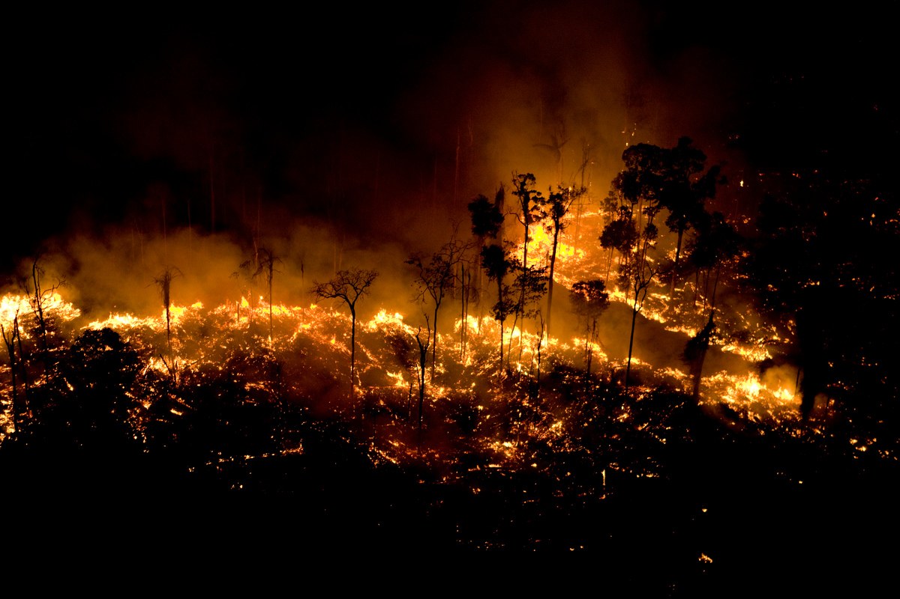

Engenheiros Digitais
FireWatch
A FALTA DE CONECTIVIDADE CUSTA VIDAS E RECURSOS
Na Amazônia, somente em 2024, cerca de 17 milhões de hectares queimaram anualmente, afetando agricultores e causando prejuizos bilionários.
Pequenas comunidades não têm acesso a sistemas de alerta, pois a cobertura de internet nessas áreas é inferior a 6%.

MONITORAMENTO INTELIGENTE MESMO ONDE NÃO HÁ CONEXÃO
Combinamos dados orbitais da NASA e Copernicus com sensores IoT em Arduino para processamento inteligente de dados.
A comunicação utiliza a tecnologia LoRa para longas distâncias e antenas Starlink para enviar alertas mesmo sem internet.
DETECÇÃO DE RISCOS ANTES QUE SE TORNEM DESASTRES
FireWatch, nossa solução de baixo custo voltada à prevenção precoce de desastres ambientais inspirada na industria espacial.
Uma simulação funcional que calcula riscos de incêndio e emite alertas rápidos em regiões sem conectividade tradicional.
PROTEGENDO QUEM VIVE DA TERRA E PARA A TERRA
Focamos em quem depende exclusivamente da terra para sobreviver na Amazônia, mas não possui acesso a internet para receber alertas.
O Projeto também apoia diretamente brigadas de incêndio e Defesa Civil na proteção ambiental de territórios.
MAIS SEGURANÇA, MENOS PREJUÍZOS
Oferecemos alertas rápidos e acessíveis para as áreas rurais da Amazônia, dando maior proteção para pequenos produtores e comunidades.
Reduzimos prejuizos financeiros e ambientais na Amazônia através do monitoramento de baixo custo e sensores locais eficientes.
FUNCIONANDO ATÉ ONDE A INTERNET NÃO FUNCIONA
Estações rurais monitoram o clima em tempo real, acionando alarmes visuais e sonoros locais mesmo sem sinal de internet.
Moradores recebem avisos automáticos por SMS, permitindo ações preventivas imediatas contra incêndios antes que o fogo saia de controle.
Cesar - RM 570108
Enzo Castilho - RM 569791
Enzo Gabriel - RM 571357
Fernando - RM 570847
Wesley - RM 573479